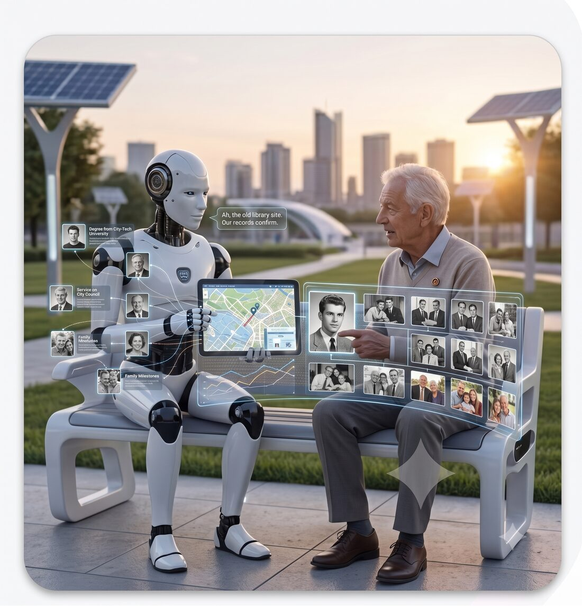

Dashboard EAP
Sistema completo de gestão de projetos com Kanban, Status Report mensal e sincronização em tempo real entre Google Sheets e banco de dados.
Supabase
Google Apps Script
JavaScript
RLS
Construo agentes, automações e sistemas de IA que rodam em produção — para empresas que querem operar com inteligência artificial de verdade, não apenas falar sobre ela.
Especialidades: agentes autônomos, modelos de linguagem, RAG e busca semântica, automação inteligente, Model Context Protocol, Computer Use, Voice AI, fine-tuning, APIs e integrações.
Cada projeto começa pelo problema real — não pela tecnologia da moda. A pergunta é sempre a mesma: o que precisa acontecer todo dia, e como a IA pode fazer isso melhor, mais barato ou mais rápido?
O resultado é software que sua equipe usa de verdade. Sem demo bonita que nunca chega em produção. Sem agente que alucina em cliente. Sem pipeline que ninguém entende.
Seis frentes de trabalho, sempre com foco em produção. Use uma, combine várias.
Agentes que tomam decisões, usam ferramentas, lembram do contexto e operam por horas sem supervisão. Orquestração multi-agente quando faz sentido.
Fluxos que conversam com seus sistemas, leem documentos, respondem clientes e disparam ações — com IA decidindo o que fazer em cada bifurcação.
Conhecimento da empresa indexado, recuperado e usado pelo modelo na hora certa. Reranking, citações e respostas que dá para auditar.
Conectores Model Context Protocol que dão ao agente acesso seguro aos seus dados, ferramentas e ambientes — internos ou de terceiros.
Agentes que operam um computador como uma pessoa — clicam, digitam, preenchem formulários e completam tarefas em sistemas que não têm API.
Quando você tem um problema e precisa decidir antes de escrever código: qual modelo, qual stack, quanto vai custar, o que terceirizar e o que não fazer.
Uma amostra do que está em produção hoje. Cada um resolveu um problema específico, não um genérico.
Sistema completo de gestão de projetos com Kanban, Status Report mensal e sincronização em tempo real entre Google Sheets e banco de dados.
Atendente virtual integrado ao WhatsApp via Evolution API, com memória de conversa, acesso a base de conhecimento e roteamento humano quando precisa.
Bridge de atendimento multicanal (Telegram, WhatsApp) com menu de gestão de projetos, relatórios sob demanda e troca de modelo de IA em runtime.
App web de troca de figurinhas com modelo N×M de reservas, autenticação, RLS por usuário e infraestrutura self-hosted em VPS dedicada.

Sou Mario Miura, engenheiro com mais de uma década entregando produtos digitais — de sistemas internos de gestão a aplicações públicas com usuários.
Nos últimos anos, mergulhei em IA aplicada: agentes, RAG, computer use, fine-tuning. O que me move é a parte chata e bonita ao mesmo tempo — fazer a IA funcionar todo dia, em escala, sob restrições reais de orçamento, prazo e equipe.
Trabalho de Brasília, sozinho ou montando time. Direto com quem decide, sem camadas.
Em breve, será aberto um canal de comunicação.
Em breve